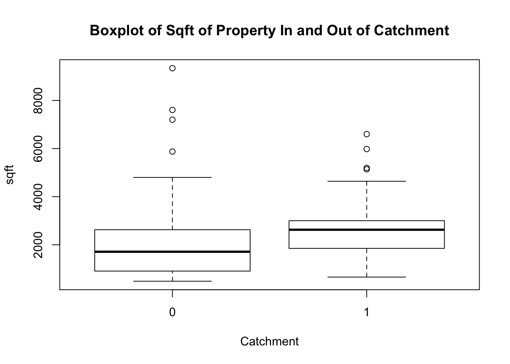

Data and Methods
Descriptive Analysis
Below are the maps of the areas that are being compared. The data was scrapped from redfin.com. Filters were set to capture the following variables: Price.Sold (how much the house was sold for), Bed (number of bedrooms), Bath (number of bathrooms), sqft (square footage of house), catchment (1 = inside PAS catchment / 0 = outside of catchment). The data is for the last 3 years. There are a total of 397 observations. 197 inside the catchment and 200 outside the catchment.

PAS Catchment Map-redfin.com

Outside the PAS Catchment-redfin.com
summary(Price.Sold[catchment=="0"])## Min. 1st Qu. Median Mean 3rd Qu. Max.
## 12100 270000 338995 362875 446250 1545000summary(Price.Sold[catchment=="1"])## Min. 1st Qu. Median Mean 3rd Qu. Max.
## 225000 401000 518000 522414 620000 1325000From running a summary command between the two catchment groups, you can tell that the average price of a home in the catchment is more than a home outside the catchment. Interesting point of data is that the most expensive property sold was outside the catchment at $1.5 million.
t.test(Price.Sold~catchment)##
## Welch Two Sample t-test
##
## data: Price.Sold by catchment
## t = -9.3983, df = 393.23, p-value < 2.2e-16
## alternative hypothesis: true difference in means is not equal to 0
## 95 percent confidence interval:
## -192912.3 -126165.1
## sample estimates:
## mean in group 0 mean in group 1
## 362875.0 522413.7The Welch two sample t-test gives us the average home price outside of the catchment and inside the catchment. The ouside average price is $362,875 while inside the catchment is $522,423. The P-value is statistically significant.
boxplot(Price.Sold ~ catchment, main="Boxplot Price.Sold In and Out of Catchment", ylab="Price.Sold", xlab="Catchment")
The Boxplots tell the same story, but from a visual standpoint and highlight the median and the IQR.
boxplot(sqft ~ catchment, main="Boxplot of Sqft of Property In and Out of Catchment", ylab ="sqft", xlab ="Catchment")Examining this boxplot helps us to understand how both groups compare in terms of the size of the properties. If the size of the property has an effect on the price, then we should look at the size of the properties in each group. The sqft seem to be comparable, with group 1 being larger, so homes in the catchment are slightly larger.
While on average, the prices are higher for group 1 (in the catchment), this is not always the case as there is overlap between the two distributions. The following section will use a regression model to test this out more formally. It might give us more insight as to how each explanatory variable account for the overall price of the property.
Empirical Analysis
redfinlm<-lm(Price.Sold ~ Bed + Bath + sqft + catchment, data=redfin)
summary(redfinlm)##
## Call:
## lm(formula = Price.Sold ~ Bed + Bath + sqft + catchment, data = redfin)
##
## Residuals:
## Min 1Q Median 3Q Max
## -760019 -68349 8023 65711 518439
##
## Coefficients:
## Estimate Std. Error t value Pr(>|t|)
## (Intercept) 1.389e+05 1.618e+04 8.586 < 2e-16 ***
## Bed 1.341e+03 5.324e+03 0.252 0.801
## Bath 4.164e+04 6.993e+03 5.954 5.81e-09 ***
## sqft 6.276e+01 8.827e+00 7.110 5.54e-12 ***
## catchment1 1.034e+05 1.319e+04 7.841 4.27e-14 ***
## ---
## Signif. codes: 0 '***' 0.001 '**' 0.01 '*' 0.05 '.' 0.1 ' ' 1
##
## Residual standard error: 127400 on 392 degrees of freedom
## Multiple R-squared: 0.5404, Adjusted R-squared: 0.5358
## F-statistic: 115.3 on 4 and 392 DF, p-value: < 2.2e-16I chose the these explanatory variables, to be in line with other research papers that discuss housing value. They were also Redfin’s default categories while doing a search which made it much easier to scrape. Since the intercept coefficient value doesn’t tell us very much, and often doesn’t, we’ll skip that coefficient and go straight to the Bed coefficient. For every unit increase in Bed, our Price.Sold value will go up $1,341. Interestingly enought, Bathroom seem to be important in this model more than Bedrooms. For every unit increase in Bathrooms, the Price.Sold increases by $41,640. When the total sqft increases by one unit, it moves the Price.Sold up by $62.76. And finally, when inside the catchment, houses seem to be worth $103,400 more.